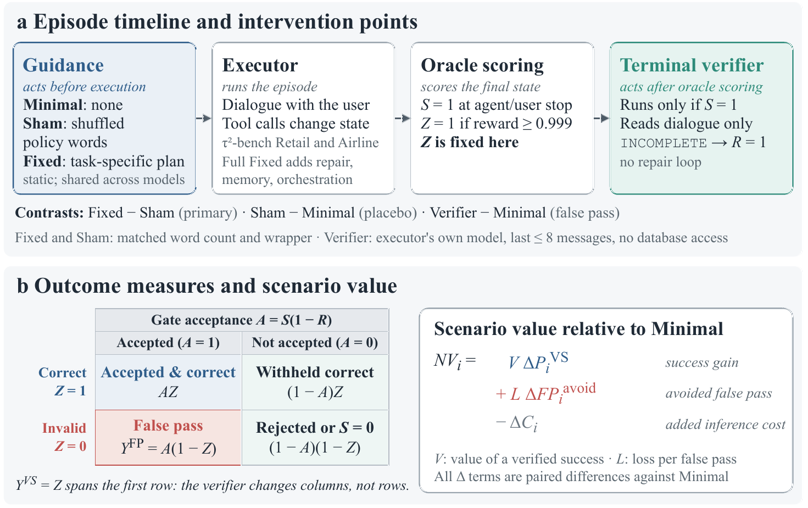
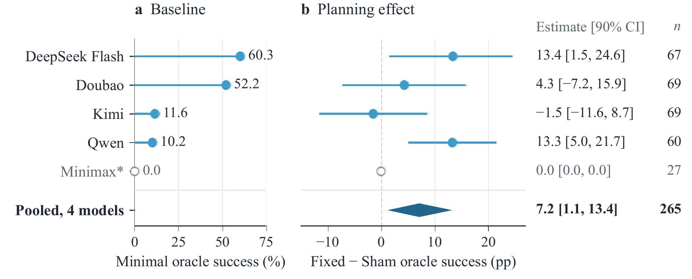
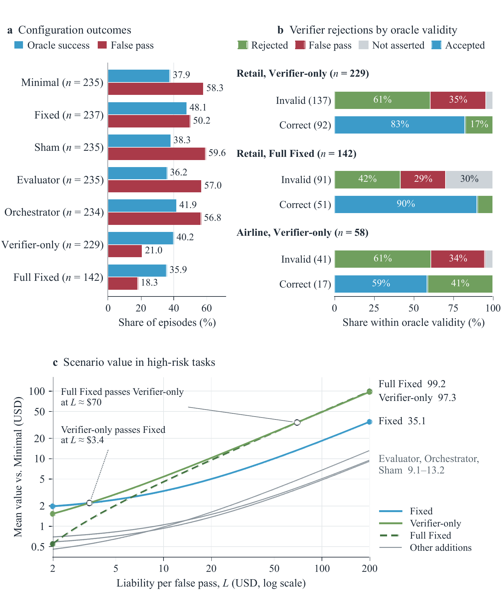

Paper 04 · Attribution & control 论文 04 · 归因与控制
How Do Agent Harnesses Create Value? Planning Information and Release Control in Stateful LLM Agents
arXiv:2609.20474 [cs.AI] · Submitted 17 September 2026 · τ²-bench Retail and Airline arXiv:2609.20474 [cs.AI] · 2026 年 9 月 17 日提交 · τ²-bench Retail 与 Airline

Abstract摘要
Agent harnesses supply planning guidance, organize execution, and check completion. We study how these components affect success, erroneous acceptance, and cost in two Retail experiments and an Airline pilot in τ²-bench. The primary comparison pairs prewritten task-specific plans (Fixed) with shuffled policy text matched in word count (Sham), isolating the contribution of guidance content. Across 265 matched cells, Fixed improves oracle-verified success by 7.17 percentage points (90% task-clustered bootstrap interval, 1.15–13.36 points), with gains concentrated in higher-complexity tasks. A read-only terminal verifier rejects 61% of Retail oracle-invalid episodes while withholding 17% of correct ones, at less than one cent of additional cost per episode. Which component matters more depends on the loss assigned to erroneous acceptance: at low liability the planning gain dominates; at high liability the verifier's avoided false passes dominate — and a standalone verifier captures nearly all the false-pass benefit of the full planning-plus-verification stack at a fraction of its cost.
Agent harness 提供规划指导、组织执行并检查完成情况。我们在 τ²-bench 的两个 Retail 实验与一个 Airline 试点中，研究这些组件如何影响成功率、错误接受与成本。主要比较是把预先写好的任务专属方案（Fixed）与字数配平的打乱策略文本（Sham）配对，从而分离出「指导内容」本身的贡献。在 265 个配对格上，Fixed 使 oracle 验证的成功率提高 7.17 个百分点（90% 任务聚类自助区间 1.15–13.36），收益集中在复杂度更高的任务上。一个只读的终端验证器拒绝了 61% 的 Retail oracle 无效回合，同时误拦了 17% 的正确回合，每回合新增成本不足一美分。哪个组件更重要，完全取决于错误接受所对应的损失：责任较低时规划收益占优，责任较高时验证器避免的错误放行占优——而单独部署验证器，就能以完整「规划＋验证」方案的一小部分成本，拿到其几乎全部的错误放行收益。
Key findings核心发现
- Guidance content carries the effect, not guidance volume. Sham text is matched to Fixed in word count and wrapper, so the 7.17-point gap across 265 matched cells is attributable to what the plan says rather than to how much text the agent receives. 起作用的是指导的内容，而不是指导的体量。Sham 文本在字数与封装形式上与 Fixed 完全配平，因此 265 个配对格上 7.17 个百分点的差距，只能归因于方案说了什么，而非代理收到了多少文字。
- Correctness, claiming, and acceptance need separate measures. A verifier can withhold an invalid result but can also reject a correct one; the Retail verifier rejects 61% of oracle-invalid episodes while withholding 17% of correct ones. 「正确」「宣称完成」「被接受」必须分开度量。验证器既能拦下无效结果，也会拒绝正确结果：Retail 验证器拒绝了 61% 的 oracle 无效回合，同时误拦 17% 的正确回合。
- The ranking of components is a function of liability, not of benchmark score. At low loss per erroneous acceptance the planning gain dominates; at high loss the verifier's avoided false passes dominate. The same measurements support opposite deployment recommendations. 组件的优劣排序取决于责任大小，而不是 benchmark 分数。每次错误接受的损失较低时，规划收益占优；损失较高时，验证器避免的错误放行占优。同一组测量结果可以支持完全相反的部署建议。
- The cheap component captures most of the safety value. A standalone verifier — under one cent per episode — captures nearly all the false-pass benefit of the full planning-plus-verification stack, at a fraction of its cost. 便宜的那个组件拿走了大部分安全价值。单独部署的验证器每回合成本不到一美分，却能拿到完整「规划＋验证」方案几乎全部的错误放行收益，而成本只是其中一小部分。
Figures图表


BibTeX
@misc{zhang2026harness,
title = {How Do Agent Harnesses Create Value? Planning Information
and Release Control in Stateful LLM Agents},
author = {Zhang, Yukun and Xu, Kemu and Chen, Yishen},
year = {2026},
eprint = {2609.20474},
archivePrefix = {arXiv},
primaryClass = {cs.AI},
url = {https://arxiv.org/abs/2609.20474}
}